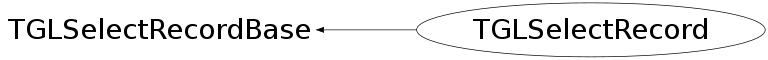

class TGLSelectRecord: public TGLSelectRecordBase
Standard selection record including information about containing scene and details ob out selected object (TGLPhysicalShape*, TObject* or simply a void* for foreign scenes).
Function Members (Methods)
public:
protected:
| void | TGLSelectRecordBase::CopyItems(UInt_t* items) |
Data Members
public:
| enum ESecSelResult { | kNone | |
| kEnteringSelection | ||
| kLeavingSelection | ||
| kModifyingInternalSelection | ||
| }; |
protected:
| Bool_t | fHighlight | Requested for highlight (set by event-handler). |
| UInt_t* | TGLSelectRecordBase::fItems | |
| Float_t | TGLSelectRecordBase::fMaxZ | |
| Float_t | TGLSelectRecordBase::fMinZ | |
| Bool_t | fMultiple | Mutliple selection requested (set by event-handler). |
| Int_t | TGLSelectRecordBase::fN | |
| TObject* | fObject | Master TObject, if applicable |
| TGLPhysicalShape* | fPhysShape | PhysicalShape, if applicable |
| Int_t | TGLSelectRecordBase::fPos | |
| TGLSceneInfo* | fSceneInfo | SceneInfo |
| TGLSelectRecord::ESecSelResult | fSecSelRes | Result of ProcessSelection; |
| void* | fSpecific | Scene specific, if applicable |
| Bool_t | fTransparent |
Class Charts
{kind=link}
{kind=link}
{kind=link}
{kind=link}

Function documentation
Bool_t AreSameSelectionWise(const TGLSelectRecord& r1, const TGLSelectRecord& r2)
Check if the records imply the same selection result, that is, their secondary members are all equal.